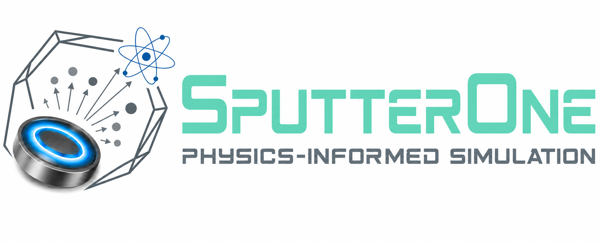

SPUTTERONE
Enabling Process Digital Twin
A Physics-Informed Interactive Magnetron Sputtering Simulator
SputterOne is an interactive simulation platform for real-time exploration of magnetron sputtering process conditions. It integrates sputtering yield, gas-phase transport, reactive sputtering, co-sputtering, and thin-film growth mode models within a unified environment.
Developed by Dr. Balaji Gururajan at the Optoelectronics Device Laboratory, Yuan Ze University.
